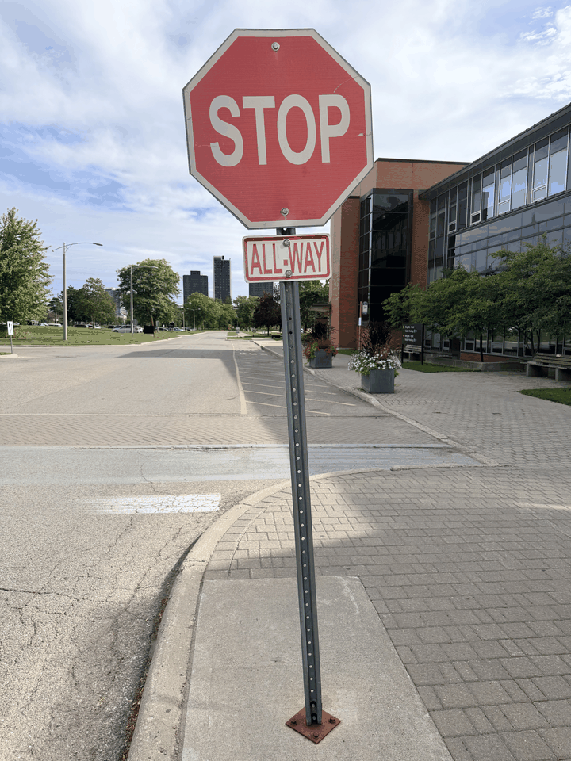

The Vertigo shot
The Dolly Zoom
Seven original photos capture a stationary stop sign from changing camera positions and zoom settings. The street behind it shifts from frame to frame.
Step back. Zoom in.
A / The effect
One sign.
Two moving worlds.
The sign never moved. The camera stepped back and zoomed in; each frame is one of the seven original photographs.
seven GIF frames
{kind=link}

B / What changes
Watch the background.
Follow the buildings and roadside trees, not just the sign.
The first original photo uses a 24 mm equivalent view. The camera is close to the sign, so nearby and distant parts of the scene differ more strongly in size.
The last original photo uses a 257 mm equivalent view. Stepping back and zooming in keeps the sign prominent while the scene behind it appears compressed.
The GIF uses IMG_7869–IMG_7875 in reverse capture order to show the camera moving back and zooming in. The 24 mm and 257 mm equivalent focal lengths come from the original HEIC metadata. Every GIF frame comes from one original photo; there are no generated or interpolated frames.
A steady subject can make the whole street move.